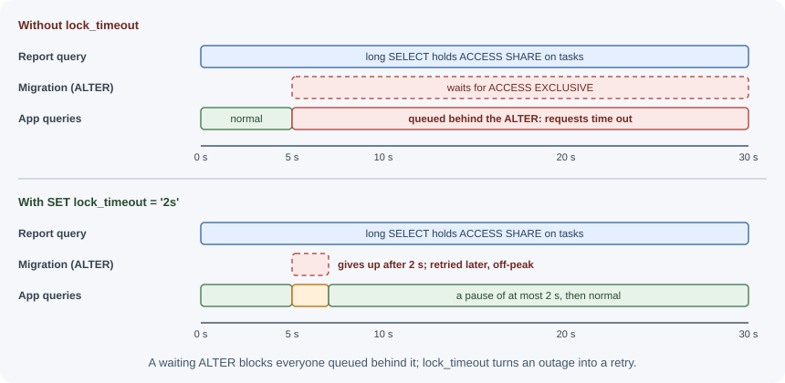

Zero-Downtime Database Migrations¶
A database migration changes the structure (schema) or the shape of the data: adding a column, renaming a field, splitting a table, building an index, converting values. A zero-downtime migration makes that change while the application keeps serving requests, without locking tables for long, and without any moment where the running code and the database disagree.
This lesson explains why schema changes and code changes reach production at different moments, the backward and forward compatibility rules that follow, the expand-and-contract technique with a full column rename over several deploys, batched backfills, locking risks in PostgreSQL, online index builds in PostgreSQL and MongoDB, the common migration tools, where migrations belong in a CI/CD pipeline, and what "rolling back a migration" really means.
Why it matters¶
Code deploys are easy to undo: start the previous image. Data changes are not: once a column is dropped or values are rewritten, the old code has nothing to read. And during every rolling, blue-green, or canary deploy, old and new code run at the same time against the same database, so a schema change that suits only the new code breaks the old instances that are still serving traffic.
The second danger is locks. A migration that looks instant on a laptop
can, on a 40-million-row table, rewrite the whole table under an
exclusive lock, or wait for a lock while every application query queues
behind it. Many "the database went down during the deploy" incidents are
one innocent-looking ALTER TABLE.
Real-world usage¶
- Martin Fowler (Danilo Sato), parallel change. The bliki entry ParallelChange names the pattern used throughout this page: break a backward incompatible change into three phases, expand (add the new form alongside the old), migrate (move clients over), and contract (remove the old form).
- Stripe. Online migrations at scale describes moving hundreds of millions of subscription records into a new table with a four-step dual-writing pattern (dual write, change all read paths, change all write paths, remove old data), backfilling with offline jobs, and using GitHub's Scientist library to compare reads from both stores before switching.
- GitHub, gh-ost. GitHub's open-source gh-ost performs online schema changes on MySQL by copying the table in the background, applying ongoing changes from the binary log, and swapping tables at the end, with throttling based on replication lag: the industrial version of "backfill in batches and switch".
- PostgreSQL documentation. The
CREATE INDEX documentation
explains that a normal index build blocks writes for its whole
duration, while
CONCURRENTLYallows writes but takes longer, cannot run inside a transaction block, and leaves an invalid index behind if it fails. - MongoDB documentation. The page on index builds on populated collections describes the build process used since MongoDB 4.2: an exclusive lock only at the start and end of the build, reads and writes allowed in between, and, since 4.4, simultaneous builds across replica set members.
Popular tools and providers: Prisma Migrate, Knex, Flyway, Liquibase, migrate-mongo, Atlas, Sqitch, golang-migrate, Django and Rails migrations, gh-ost and pt-online-schema-change for MySQL, and pgroll for expand-and-contract on PostgreSQL.
How it works¶
Why schema and code change at different moments¶
A typical deploy of TaskFlow API looks like this:
- The pipeline runs the migration (once).
- The new code rolls out instance by instance over several minutes.
- If something goes wrong, the old code is rolled back in.
Between steps 1 and 2 the old code runs on the new schema. During step 2 both versions run on it. During step 3 the old code runs again on a schema that may now contain data written by the new code. So every migration must satisfy two rules:
- Backward compatibility of the schema: the schema after the migration still works for the code currently running (old code).
- Forward compatibility of the code: the new code works with data written by both old and new code, and the old code (after a rollback) tolerates data written by the new code.
![Diagram: rows are schema versions S0 with notes only, S1 with notes and description, and S2 with description only; columns are code versions v1 reading and writing notes, v2 writing both and reading notes, v3 writing both and reading description, and v4 reading and writing description; on S0 only v1 works and the others fail on the missing column; on S1 all four work, v3 once the backfill has run; on S2 only v4 works; the numbered safe order goes S0 with v1, S1 with v1, S1 with v2, S1 with v3, S1 with v4, then S2 with v4, changing either the schema or the code at each step.](../schema-compatibility-matrix.svg)
The matrix shows the consequence: you cannot get from "S0 + v1" to "S2 + v4" in one deploy without passing through a combination that fails. You need a path through cells that all work, changing one thing at a time.
Expand and contract: renaming a column over several deploys¶
Goal: rename tasks.notes to tasks.description in PostgreSQL. A
direct ALTER TABLE tasks RENAME COLUMN notes TO description is a fast,
metadata-only change, and it breaks every running instance of the old
code the instant it commits. The zero-downtime version:
![Diagram: six steps to rename notes to description; step 1 expand adds an empty description column while v1 reads and writes notes and any rollback is safe; step 2 deploys v2 which reads notes and writes both, rollback to v1; step 3 backfills old rows in batches, still reading notes and writing both, rollback to v1; step 4 deploys v3 which reads description and writes both, rollback to v2 or v1; step 5 deploys v4 which reads and writes description only and leaves notes stale, rollback only to v3; step 6 contracts by dropping notes weeks later, after which only rolling forward from v4 is possible.](../expand-contract-timeline.svg)
- Expand (migration).
ALTER TABLE tasks ADD COLUMN description text;A nullable column without a default is a metadata-only change in PostgreSQL. v1 is unaffected. - Dual write (deploy v2). v2 writes both
notesanddescriptionon every insert and update, and still readsnotes. New and changed rows now have both. - Backfill (job). Copy
notesintodescriptionfor old rows, in small batches (next section). After this, both columns hold the same data for every row. - Switch reads (deploy v3). v3 reads
descriptionand still writes both, so rolling back to v2 (which readsnotes) loses nothing. - Single write (deploy v4). v4 reads and writes only
description.notesgoes stale. Rollback is now only to v3, because v2 would read stalenotes. - Contract (migration, later). After v4 has been stable for a
while (days to weeks) and nothing reads
notes(check query logs, reports, other services),ALTER TABLE tasks DROP COLUMN notes;.
That is four deploys and two migrations for one rename. It sounds heavy;
in practice steps 2 and 4 are small code changes, and the alternative is
an outage or a maintenance window. The same shape works for type changes
(store a timestamp as timestamptz instead of text), splitting a column,
moving data to a new table, and changing the shape of a MongoDB document.
A variation keeps the two columns in sync with a database trigger instead of dual writes in the application. Tools such as pgroll automate this: they expose the old and new schema as views and sync columns with triggers until the contract step.
Backfills in batches¶
A single UPDATE tasks SET description = notes; on 40 million rows
holds row locks on every row until it commits, generates a huge amount of
write-ahead log (WAL), can bloat the table, and makes replicas fall
behind. Instead:
- Batch by key range (keyset pagination on the primary key): process
1,000 to 10,000 rows per statement, ordered by
id. - Commit each batch so locks are short and progress is durable.
- Pause between batches and throttle on replication lag or database CPU, so production traffic keeps priority.
- Make it idempotent and resumable: only touch rows that still need
it (
WHERE description IS NULL), so a restart repeats nothing. - Do not overwrite newer data: because the app already dual-writes, the backfill must only fill gaps, never replace values the app wrote.
- Verify afterwards: count rows where the two columns differ; it should be zero.
Worked example: 40 million rows, batches of 2,000, each batch taking about
150 ms plus a 100 ms pause, gives 40,000,000 / 2,000 = 20,000 batches
and 20,000 x 0.25 s = 5,000 s, about 83 minutes, with the database
never busy for more than 150 ms at a time.
Locking risks in PostgreSQL¶
Every ALTER TABLE takes a lock. Most take ACCESS EXCLUSIVE, which
conflicts with everything, including plain SELECTs. The danger is not
only the time the lock is held but the time spent waiting for it:

Locks are granted in order, so a waiting ACCESS EXCLUSIVE request
blocks every later request on that table, even ones compatible with the
lock currently held. A five-second metadata change becomes a 30-second
outage because a report query was running. The fix is to set a short
lock_timeout for migrations and retry:
SET lock_timeout = '2s'; -- give up instead of queueing the whole app
SET statement_timeout = '30s'; -- never let a migration run unbounded
ALTER TABLE tasks ADD COLUMN description text;
Which operations are safe on a large, busy PostgreSQL table:
| Operation | What happens | Safe approach |
|---|---|---|
ADD COLUMN (nullable, no default) |
Metadata only, brief exclusive lock | Safe with lock_timeout |
ADD COLUMN ... DEFAULT <constant> |
Metadata only since PostgreSQL 11 | Safe with lock_timeout |
ADD COLUMN ... DEFAULT <volatile expression> (for example gen_random_uuid()) |
Rewrites the whole table under an exclusive lock | Add nullable, backfill in batches, then set the default |
ALTER COLUMN ... TYPE |
Usually rewrites the table and rebuilds indexes | New column, dual write, backfill, switch |
ALTER COLUMN ... SET NOT NULL |
Scans the whole table under an exclusive lock | Add CHECK (col IS NOT NULL) NOT VALID, VALIDATE it, then SET NOT NULL (PostgreSQL 12+ skips the scan) |
ADD FOREIGN KEY |
Validates every row while holding locks | Add with NOT VALID, then VALIDATE CONSTRAINT |
CREATE INDEX |
Blocks writes for the whole build | CREATE INDEX CONCURRENTLY |
RENAME COLUMN / RENAME TABLE |
Instant, but breaks running code | Expand and contract |
DROP COLUMN |
Instant (space reclaimed later), breaks code that still uses it | Only in the contract step |
VALIDATE CONSTRAINT takes a weaker lock that allows reads and writes, so
it can scan for as long as it needs.
Online index builds¶
PostgreSQL. CREATE INDEX CONCURRENTLY builds the index without
blocking inserts, updates, and deletes. Costs and caveats:
- It scans the table twice and waits for running transactions, so it takes longer and uses more resources.
- It cannot run inside a transaction block, so migration tools must be told not to wrap that migration in a transaction.
- If it fails (a deadlock, a uniqueness violation, a cancel), it leaves
an invalid index that is still maintained on writes but never used
for reads. Drop it (
DROP INDEX CONCURRENTLY) and build again. Note thatCREATE INDEX CONCURRENTLY IF NOT EXISTSsees the invalid index and silently does nothing.
MongoDB. Since 4.2, index builds use one optimized process (the old
background option is ignored): the build holds an exclusive lock on the
collection only briefly at the start and end, and allows reads and writes
in between. Since 4.4, a build on a replica set runs on all data-bearing
members at the same time and commits once a quorum (commitQuorum) is
ready. Practical points:
- A large build still competes for CPU, I/O, and memory; run it off-peak and watch replication lag.
- A unique index build fails if duplicates exist; find and fix them first.
- For the most sensitive clusters, MongoDB documents a rolling procedure that builds the index on one member at a time, taken out of the replica set.
Schemaless does not mean migration-free¶
MongoDB will happily store documents of different shapes in one
collection, which moves the migration problem into the code: after a
rename, old documents still have notes and new ones have
description. The same expand-and-contract steps apply:
- Code reads both shapes during the transition
(
task.description ?? task.notes). - A batched backfill updates old documents (an update with an aggregation pipeline can copy one field into another).
- Some teams migrate lazily: convert a document when it is next written, and run a final backfill for the rest.
- If you use
$jsonSchemavalidation, loosen it in the expand step (validationLevel: "moderate"applies rules only to inserts and to documents that already pass) and tighten it in the contract step.
Migration tools¶
| Tool | Ecosystem | Migrations are | Apply in production | Down migrations |
|---|---|---|---|---|
| Prisma Migrate | Node, SQL databases | SQL generated from the Prisma schema, editable | npx prisma migrate deploy |
No automatic down; write a new migration (or use prisma migrate diff) |
| Knex | Node, SQL databases | JavaScript up/down functions |
npx knex migrate:latest |
npx knex migrate:rollback runs your down |
| Flyway | JVM, any SQL database | Versioned SQL files (V3__add_description.sql) |
flyway migrate |
Undo migrations are not in the free Community edition |
| Liquibase | JVM, many databases | Changelogs of changesets (SQL, XML, YAML) | liquibase update |
Rollback blocks, generated for some change types |
| migrate-mongo | Node, MongoDB | JavaScript up(db, client)/down(db, client) |
npx migrate-mongo up |
npx migrate-mongo down runs your down |
All of them record applied migrations in a table or collection (for
example knex_migrations, _prisma_migrations, flyway_schema_history,
migrate-mongo's changelog) and should prevent two runners applying
migrations at once, through a lock table, an advisory lock, or a lock
collection. Check what yours does before running it from several
places.
Running migrations in CI/CD¶
- Expand migrations run before the code deploy, as a separate pipeline step or job, once.
- Contract migrations run in a later release, after the code that stopped using the old structure has been stable. Many teams require a manual approval for any migration that drops or rewrites data.
- Rehearse on staging with production-sized data, measuring duration and locks. A migration that takes 2 seconds on 5,000 rows can take 20 minutes on 40 million.
- Lint migrations for dangerous operations (non-concurrent index
builds,
SET NOT NULL, type changes, drops) and fail the build unless a reviewer explicitly allows them. - Keep migrations small and separate from big code changes, so a failure is easy to attribute.
- Take or verify a backup (or confirm point-in-time recovery) before destructive steps.
Rolling back migrations¶
"Down" migrations look like a rollback button but rarely are one:
- A down migration that re-adds a dropped column cannot restore its data.
- A down migration after new code wrote data in the new shape may destroy that data.
- Under time pressure, running untested down migrations is risky.
In practice teams roll forward: they roll back the code (which the expand-and-contract steps make safe) and fix the schema with a new migration. Because expand steps only add things, they rarely need undoing; because contract steps happen late, after stability is proven, they rarely need undoing either. For truly destructive changes, the real rollback is a restore from backup, which is why backups and restore tests matter (see database backups and point-in-time recovery).
When to use and when not to use¶
| Change | Approach |
|---|---|
| Add a nullable column, add a table, add a field | Single expand migration before the deploy |
| Add a column with a constant default (PostgreSQL 11+) | Single migration with lock_timeout |
| Add an index to a large table | CREATE INDEX CONCURRENTLY (PostgreSQL), off-peak build (MongoDB) |
| Rename a column or field, change a type | Full expand and contract over several releases |
| Make a column required | Backfill, CHECK ... NOT VALID, VALIDATE, then SET NOT NULL |
| Drop a column or collection | Contract step, a release after the code stopped using it |
| Small internal tool, maintenance window available | A direct change during the window may be simpler and acceptable |
| Tiny table (hundreds of rows) on a quiet system | Locks are short; still use lock_timeout, but full ceremony may be unnecessary |
Practical examples¶
Knex: the expand migration with a lock timeout¶
// migrations/20261113090000_add_tasks_description.js
export async function up(knex) {
await knex.raw("SET LOCAL lock_timeout = '2s'"); // only for this migration's transaction
await knex.schema.alterTable("tasks", (table) => {
table.text("description"); // nullable, no default: metadata-only
});
}
export async function down(knex) {
await knex.schema.alterTable("tasks", (table) => {
table.dropColumn("description");
});
}
Knex runs each migration in a transaction by default, so SET LOCAL
applies only to it. If the lock is not granted within 2 seconds the
migration fails cleanly and can be retried, instead of freezing the API.
Dual writing and reading in the application (v2 and v3)¶
// src/tasks/repository.js (v2: write both, read the old column)
export async function updateTaskNotes(db, taskId, text) {
await db.query(
"UPDATE tasks SET notes = $1, description = $1, updated_at = now() WHERE id = $2",
[text, taskId],
);
}
export async function getTask(db, taskId) {
const { rows } = await db.query("SELECT id, title, notes FROM tasks WHERE id = $1", [taskId]);
return rows[0] && { ...rows[0], description: rows[0].notes };
}
// v3 changes only the read: SELECT id, title, description FROM tasks ...
// and keeps writing both columns, so rolling back to v2 loses nothing.
A batched, resumable backfill¶
// scripts/backfill-task-description.js: copy notes -> description in small batches
import knexFactory from "knex";
const knex = knexFactory({ client: "pg", connection: process.env.DATABASE_URL });
const BATCH_SIZE = 2_000;
const PAUSE_MS = 100;
let lastId = 0;
let total = 0;
for (;;) {
const { rows } = await knex.raw(
`WITH batch AS (
SELECT id FROM tasks
WHERE id > ? AND description IS NULL AND notes IS NOT NULL
ORDER BY id
LIMIT ?
)
UPDATE tasks AS t
SET description = t.notes
FROM batch
WHERE t.id = batch.id AND t.description IS NULL
RETURNING t.id`,
[lastId, BATCH_SIZE],
);
if (rows.length === 0) break;
lastId = rows.reduce((max, r) => Math.max(max, Number(r.id)), lastId);
total += rows.length;
console.log(`backfilled ${total} rows, last id ${lastId}`);
await new Promise((resolve) => setTimeout(resolve, PAUSE_MS));
}
const { rows: [check] } = await knex.raw(
"SELECT count(*) AS mismatched FROM tasks WHERE description IS DISTINCT FROM notes",
);
console.log(`done: ${total} rows updated, ${check.mismatched} rows still differ`);
await knex.destroy();
- Each statement is its own transaction, so locks last milliseconds.
description IS NULLin both places makes the job idempotent and keeps it from overwriting values the dual-writing app has already set.- Keyset pagination (
id > lastId) stays fast however far the job gets;OFFSETwould get slower with every batch. - In production, also pause while replica lag exceeds a threshold.
Making the new column required, safely¶
-- migrations: run after the backfill reports zero mismatches
SET lock_timeout = '2s';
-- 1. Add the rule without checking existing rows (brief lock only)
ALTER TABLE tasks
ADD CONSTRAINT tasks_description_not_null CHECK (description IS NOT NULL) NOT VALID;
-- 2. Check existing rows; this lock allows reads and writes to continue
ALTER TABLE tasks VALIDATE CONSTRAINT tasks_description_not_null;
-- 3. PostgreSQL 12+ uses the validated constraint and skips the full scan
ALTER TABLE tasks ALTER COLUMN description SET NOT NULL;
ALTER TABLE tasks DROP CONSTRAINT tasks_description_not_null;
An index built concurrently, with invalid-index cleanup¶
// migrations/20261113091000_index_tasks_assignee.js
export const config = { transaction: false }; // CONCURRENTLY cannot run in a transaction
const INDEX = "tasks_assignee_id_due_idx";
export async function up(knex) {
await knex.raw("SET lock_timeout = '2s'");
// A failed concurrent build leaves an INVALID index that IF NOT EXISTS would skip
const { rows } = await knex.raw(
`SELECT i.indisvalid FROM pg_class c JOIN pg_index i ON i.indexrelid = c.oid
WHERE c.relname = ?`,
[INDEX],
);
if (rows.length > 0 && !rows[0].indisvalid) {
await knex.raw(`DROP INDEX CONCURRENTLY ${INDEX}`);
}
await knex.raw(`CREATE INDEX CONCURRENTLY IF NOT EXISTS ${INDEX} ON tasks (assignee_id, due_at)`);
await knex.raw("RESET lock_timeout"); // this session is reused by later migrations
}
export async function down(knex) {
await knex.raw(`DROP INDEX CONCURRENTLY IF EXISTS ${INDEX}`);
}
MongoDB with migrate-mongo¶
// migrate-mongo-config.js
module.exports = {
mongodb: {
url: process.env.MONGODB_URI,
databaseName: "taskflow",
options: {},
},
migrationsDir: "migrations",
changelogCollectionName: "changelog",
lockCollectionName: "changelog_lock", // prevents two runners at once
lockTtl: 0,
migrationFileExtension: ".js",
useFileHash: false,
moduleSystem: "commonjs",
};
// migrations/20261113090000-copy-notes-to-description.js
// Expand + backfill: copy notes into description in batches; notes stays for now.
module.exports = {
async up(db) {
const tasks = db.collection("tasks");
const BATCH_SIZE = 1000;
let lastId = null;
for (;;) {
const filter = { description: { $exists: false }, notes: { $exists: true } };
if (lastId) filter._id = { $gt: lastId };
const ids = await tasks
.find(filter, { projection: { _id: 1 } })
.sort({ _id: 1 })
.limit(BATCH_SIZE)
.map((doc) => doc._id)
.toArray();
if (ids.length === 0) break;
// Update with an aggregation pipeline (MongoDB 4.2+): copy one field into another
await tasks.updateMany(
{ _id: { $in: ids }, description: { $exists: false } },
[{ $set: { description: "$notes" } }],
);
lastId = ids[ids.length - 1];
await new Promise((resolve) => setTimeout(resolve, 100));
}
await tasks.createIndex({ assigneeId: 1, dueAt: 1 }, { name: "assignee_due" });
},
async down(db) {
// The expand step removed nothing, so only the new index needs undoing.
await db.collection("tasks").dropIndex("assignee_due");
},
};
npx migrate-mongo status # which migrations are applied
npx migrate-mongo up # apply pending ones (once, from the pipeline)
Migrations as their own pipeline step¶
# .github/workflows/deploy.yml (excerpt; the build job is as in "Environments and promotion")
jobs:
migrate:
needs: build
runs-on: ubuntu-latest
environment: production
steps:
- uses: actions/checkout@v7
- uses: actions/setup-node@v7
with:
node-version: 24
cache: npm
- run: npm ci
- run: npx knex migrate:latest # expand-only migrations, reviewed in the PR
env:
DATABASE_URL: ${{ secrets.DATABASE_URL }}
deploy:
needs: [build, migrate] # code rolls out only after the schema is ready
runs-on: ubuntu-latest
environment: production
steps:
- uses: actions/checkout@v7
- run: ./scripts/deploy.sh production "${{ needs.build.outputs.image }}"
Contract migrations live in a separate, manually triggered workflow (or a later release) so that dropping a column is always a deliberate act.
Best practices¶
- Assume old and new code run at the same time; every migration must work with both.
- Split breaking changes into expand, migrate, and contract; never combine a destructive schema change with the code change that needs it.
- Set
lock_timeout(andstatement_timeout) for every migration on PostgreSQL; retry instead of queueing the application. - Build indexes concurrently (PostgreSQL) or off-peak with lag monitoring (MongoDB).
- Backfill in small, idempotent, resumable batches, throttled on load and replica lag.
- Rehearse migrations on production-sized data and record how long they take.
- Run expand migrations once, before the deploy, from the pipeline; run contract migrations later, with approval.
- Prefer rolling forward; treat down migrations as a convenience for development, not a production safety net.
- Make sure backups and point-in-time recovery work before destructive steps.
In production¶
- The API froze for 30 seconds during a deploy.
Detect: connection pool exhaustion and timeouts begin at the
migration step;
pg_stat_activityshows many sessions waiting on a lock behind anALTER TABLE. Cause: the migration waited for anACCESS EXCLUSIVElock behind a long query, and everything queued behind it. Fix:lock_timeoutwith retries, run migrations off-peak, and cancel long-running reports first. - Old instances threw errors right after the migration. Detect: errors such as "column does not exist" from pods still on the previous version. Cause: a rename or drop shipped together with the code that needed it. Fix: expand and contract; drop only after no running code uses the column.
- A rollback lost data. Detect: records created after the deploy miss fields when served by the rolled-back version. Cause: the new version wrote only the new column, and the old version reads the old one. Fix: dual write until the old reader can no longer be rolled back to.
- An index migration "succeeded" but queries are still slow.
Detect:
EXPLAINdoes not use the index;pg_index.indisvalidis false. Cause: an earlier concurrent build failed and left an invalid index, andIF NOT EXISTSskipped the rebuild. Fix: drop the invalid index concurrently and build again. - Replicas fell minutes behind during a backfill.
Detect: replication lag alerts; reads from replicas return stale data.
Cause: a single huge
UPDATEor batches with no pause. Fix: smaller batches, pauses, and throttling on measured lag. - The migration ran twice and failed halfway. Detect: duplicate-object errors at startup on several instances. Cause: migrations run on application start by every replica. Fix: one pipeline step or job, and a tool lock.
Important terminology¶
- Migration: a versioned change to schema or data, applied in order.
- Backward-compatible schema change: a change the currently running code still works with.
- Expand and contract (parallel change): add the new form, move readers and writers over, then remove the old form.
- Dual write: writing both the old and new structure during a transition.
- Backfill: filling new structures for existing rows or documents.
- Keyset pagination: paging by "greater than the last key seen" instead of by offset.
- Lock queue: the ordered list of sessions waiting for a lock; a waiting exclusive request blocks those behind it.
lock_timeout: a PostgreSQL setting that makes a statement fail if it cannot get a lock in time.- Online index build: building an index while reads and writes continue.
- Roll forward: fixing a problem with a new change instead of undoing the old one.
Common mistakes and misconceptions¶
- Shipping a rename, drop, or type change in the same release as the code that depends on it.
- Believing MongoDB needs no migrations because it has no fixed schema.
- Running one giant
UPDATEto backfill. - Testing migrations only on small development databases.
- Relying on down migrations to undo destructive changes.
- Using
CREATE INDEXwithoutCONCURRENTLYon a large, busy table. - Forgetting other readers of the table (reports, other services, BI tools) before the contract step.
- Running migrations from application startup in every instance.
Revision questions¶
- Why must a migration run before a deploy be compatible with the code that is already running?
- List the six steps to rename a column with expand and contract, and say which code version each step can safely roll back to.
- Why does a waiting
ALTER TABLEblock queries that do not conflict with the lock currently held? - How do you add a
NOT NULLconstraint to a large PostgreSQL table without a long exclusive lock? - A table has 12 million rows. Batches of 3,000 rows take 120 ms each with an 80 ms pause. How long does the backfill take?
- What happens when
CREATE INDEX CONCURRENTLYfails, and why canIF NOT EXISTShide the problem? - How do MongoDB index builds since version 4.2 affect reads and writes?
- Why do most teams roll forward instead of running down migrations in production?